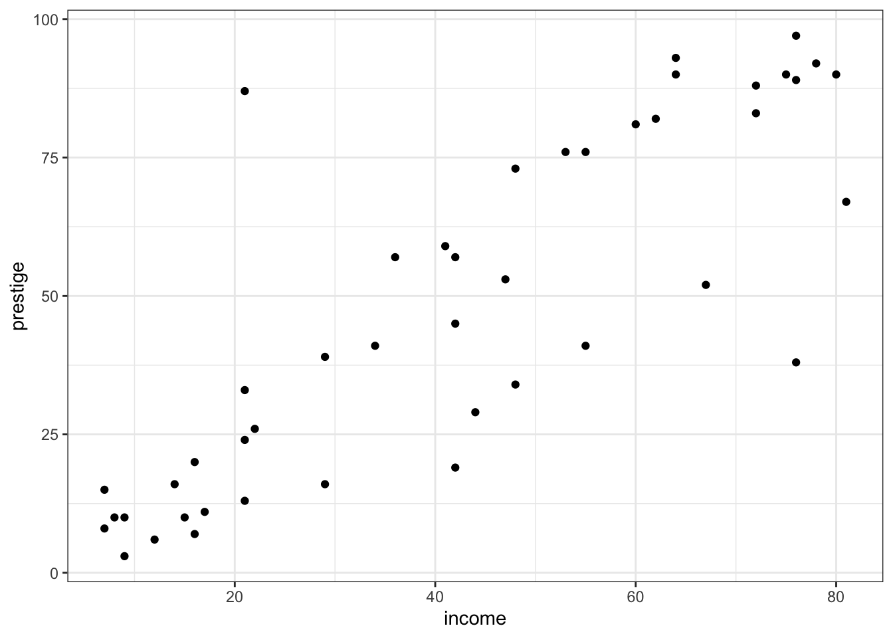

zero_one_norm <- function(x){
(x - min(x))/(max(x) - min(x))
}Activity: Functions
Instructions:
- Work with a neighbor to answer the following questions
- To get started, download the class activity template file
- When you are finished, render the file as an HTML and submit the HTML to Canvas (let me know if you encounter any problems)
0-1 normalization
In class, we wrote a function called z_score to compute the z-score for each entry in a vector, by subtracting the mean of that vector and dividing by the standard deviation.
This is one example of normalization. Another type of normalization is 0-1 normalization. Given values \(x_1,...,x_n\), the 0-1 normalized values are defined as
\[x_i^* = \frac{x_i - \min\{x_1,...,x_n\}}{\max\{x_1,...,x_n\} - \min\{x_1,...,x_n\}}\]
Here is one possible implementation of this function:
- Question: Think of at least one assumption made by this function which will cause the function to fail if the assumption is not met, then use
stopto throw an error (with a helpful message) if that assumption is not met.
Robust regression
Suppose we wish to fit a simple linear regression model:
\[Y = \beta_0 + \beta_1 X + \varepsilon\]
The most common way to estimate the coefficients is to minimize the residual sum of squares (SSE):
\[SSE = \sum \limits_{i=1}^n(Y_i -\widehat{Y}_i)^2\]
However, the SSE (and therefore the least squares estimates) is sensitive to outliers.
Robust regression is an alternative in which a different function (other than SSE) is minimized. A common choice uses the Huber loss function:
\[\rho_\gamma(Y_i, \widehat{Y}_i) = \begin{cases} \frac{1}{2}(Y_i - \widehat{Y}_i)^2 & |Y_i - \widehat{Y}_i| < \gamma \\ \gamma|Y_i - \widehat{Y}_i| - \frac{1}{2}\gamma^2 & |Y_i - \widehat{Y}_i| \geq \gamma \end{cases}\]
That is, when the residual \(Y_i - \widehat{Y}_i\) is small, we’re comfortable using the usual squared error \((Y_i - \widehat{Y}_i)^2\) from OLS. When the residual is large, however, we instead use the absolute error \(|Y_i - \widehat{Y}_i|\), which places less weight on “big” residuals than the squared error.
The parameter \(\gamma\) tells us when to transition from squared errors to absolute errors.
Initial implementation
- Question: Write a function called
huber_lossthat satisfies the following requirements:- Inputs:
y: a single value for the observed responsey_hat: a single value for the predicted valuegamma: the parameter \(\gamma\) in the loss function
- Output: the Huber loss \(\rho_\gamma(Y_i, \widehat{Y}_i)\)
- Your function should use
if...else...statements
- Inputs:
Here is an example of the function in action:
huber_loss(2, 2, 1)[1] 0huber_loss(2, 2.5, 1)[1] 0.125huber_loss(2, 3, 1)[1] 0.5Vector inputs
When we fit a regression model, we don’t just want to compute the loss for a single observation. We want to compute the loss across all observations!
So what happens if we try to use our function with vector inputs of length greater than 1?
huber_loss(c(2, 2, 2), c(2, 2.5, 3), 1)Error in if (abs(res) < gamma) {: the condition has length > 1We can an error! This is because if...else... statements can only handle input of length one. If y and y_hat are single numbers, we are fine. But if we pass in vectors of length more than 1, R doesn’t know what to do.
Fortunately, there is a simple alternative: the ifelse function! The ifelse function is vectorized: given a vector of TRUE/FALSE values, it will return a value for each entry in the vector, with a different return value for the TRUE and FALSE entries.
For instance, here is a small example:
x <- 1:10
ifelse(x < 5, 0, x) [1] 0 0 0 0 5 6 7 8 9 10Rewriting the implementation
- Question: Modify your
huber_lossto satisfy the following requirements- Inputs:
y: a vector of observed responsesy_hat: a vector of predicted valuesgamma: the parameter \(\gamma\) in the loss function
- Output: a vector of the Huber loss \(\rho_\gamma(Y_i, \widehat{Y}_i)\) for each observation in the original inputs
- Your implementation should use the
ifelsefunction
- Inputs:
Here is an example of the function in action:
huber_loss(c(2, 2, 2), c(2, 2.5, 3), 1)[1] 0.000 0.125 0.500Fitting a model
The Duncan data from the car package contains information on the income and prestige of 45 different US occupations in 1950. Here is a plot of the data:
library(car)
library(tidyverse)
Duncan |>
ggplot(aes(x = income, y = prestige)) +
geom_point() +
theme_bw()
Examining the scatterplot, we see that there is a potential outlier with an income around 20 but a prestige around 85. We may want to fit a model that is robust to this potential outlier.
This means that we want to minimize the function
\[L(\beta_0, \beta_1) = \sum \limits_{i=1}^n \rho_\gamma(\text{Prestige}_i, \beta_0 + \beta_1 \text{Income}_i)\]
How do we do this in R?
Example: least squares
Here is how we could minimize the SSE for the Duncan data:
sse_fun <- function(beta){
y <- Duncan$prestige
y_hat <- beta[1] + beta[2]*Duncan$income
sum((y - y_hat)^2)
}
optim(c(0, 1), sse_fun)$par[1] 2.453776 1.080407The optim function optimizes a provided function. The first argument is an initial guess for the parameters of the function (here an initial guess that the intercept is 0 and the slope is 1), and the second argument is the function itself (here sse_fun). Note that the function needs to take a single vector of parameters (beta) – it can’t take separate arguments for the intercept and slope.
From the optim output, we get that \(\widehat{\beta}_0 \approx 2.45\) and \(\widehat{\beta}_1 \approx 1.08\). How does this compare with the lm output?
lm(prestige ~ income, data = Duncan)
Call:
lm(formula = prestige ~ income, data = Duncan)
Coefficients:
(Intercept) income
2.457 1.080 The results are pretty close!
Fitting robust regression
- Question: Use
optimto minimize \(L(\beta_0, \beta_1) = \sum \limits_{i=1}^n \rho_\gamma(\text{Prestige}_i, \beta_0 + \beta_1 \text{Income}_i)\), with \(\gamma = 1\). Report the values of the estimated coefficients – how do they compare with the least squares estimates?